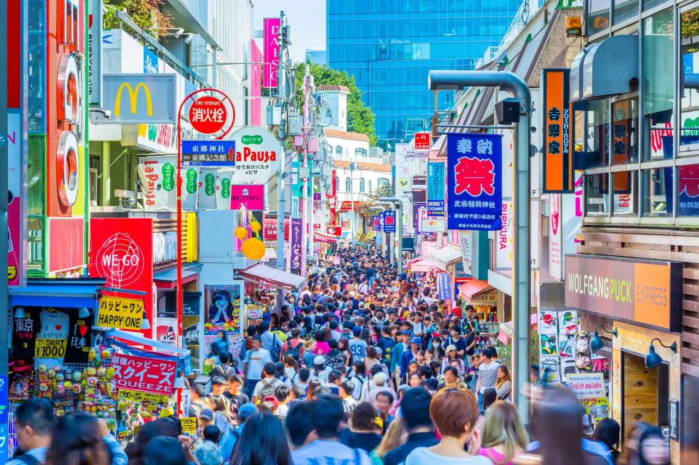
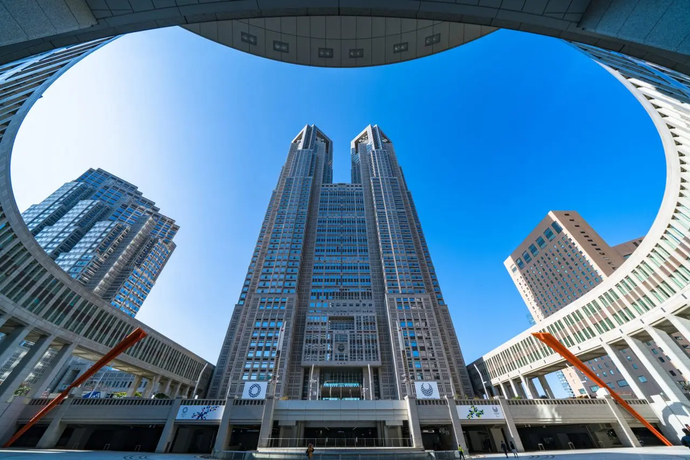
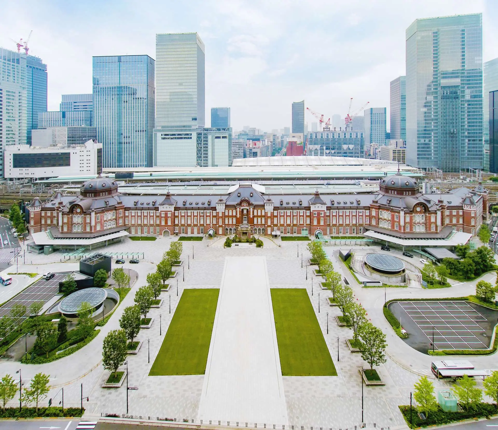
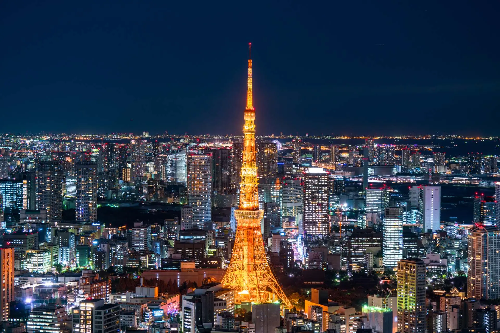
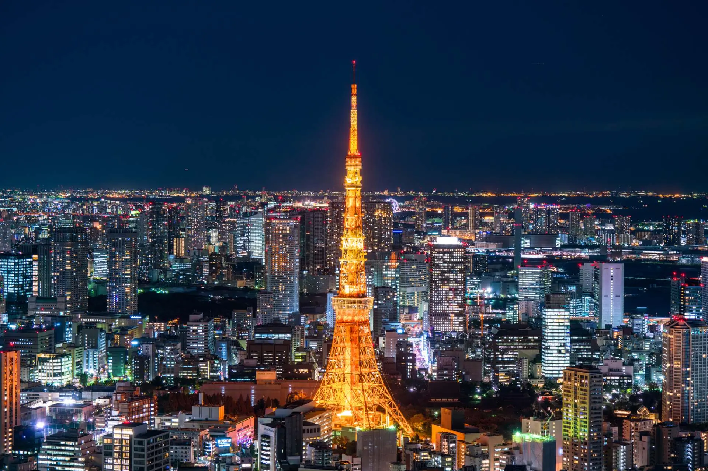

日本語
日本語
 简体中文
简体中文
Access to Major Tourist Attractions in Tokyo

I have created a daily plan of spots to visit from the perspective of transportation. Please refer to it.
Day 1: Ueno, Akihabara


Ueno Station is historically at the heart of Tokyo. It is easy to access and convenient for transportation. Not only are there many tourist spots, but shopping is also easy here.
Akihabara is the world-famous electric town! It is also the center of gaming, anime, and pop culture!
Day 2: Skytree, Asakusa


The Tokyo Skytree is recognized by Guinness World Records as the tallest tower in the world. You can get a panoramic view of the Kanto Plain.
Visit Asakusa, one of the most famous tourist destinations in Japan. It is an area where you can experience Japan's history, traditional food culture, sweets, and a truly Japanese atmosphere.
Day 3: Shibuya, Harajuku, Meiji Shrine


Explore the popular shopping areas of "Harajuku," "Shibuya," and "Shinjuku." It's no exaggeration to say you can buy anything you want here. Take a photo with the Hachiko statue just outside JR Shibuya Station.
Meiji Shrine, with the largest number of visitors for New Year's shrine visits, is a peaceful spot rich with greenery, where you can feel relaxed just by walking along the path.
Day 4: Ikebukuro, Shinjuku


Sunshine Aquarium, located in Sunshine City, is Japan’s first urban high-rise aquarium. With its "sky oasis" concept, it provides a space filled with sky, light, water, and greenery that makes you forget you're in the middle of the city.
Shinjuku is a big town filled with skyscrapers, commercial facilities, and an enormous entertainment district.
Day 5: Tokyo Station, Imperial Palace


Tokyo Station, which opened in December 1914, is a beautiful building and a gateway to Japan. Walking around the station offers a view of a fusion of skyscrapers and nature.
The Imperial Palace, the residence of the Emperor, and the surrounding area are full of attractions, including historic buildings over 400 years old, beautifully maintained flowers and nature throughout the year.
Day 6: Toyosu Market, Tokyo Tower, Ginza
 

The old Tsukiji Market, which supported the appetite of Tokyoites, relocated to Toyosu in 2018 due to aging facilities.
Tokyo Tower, born in 1958, stands 333 meters tall, surpassing the Eiffel Tower in Paris as the world’s tallest freestanding steel tower at the time.
Day 7: Odaiba


Odaiba, with its indoor theme parks and spacious parks facing the sea, is a perfect area for active family outings.
The "DigitaReal" indoor theme park in Odaiba blends the digital and real worlds, offering a unique experience.
Day 8: Tokyo Disneyland, Tokyo DisneySea

Known as the "Kingdom of Dreams and Magic," Tokyo Disneyland is a major theme park located about 15 minutes by train from Tokyo Station, a must-visit spot for families with children.
Tokyo DisneySea, located next to Tokyo Disneyland, brings to life stories and legends related to the sea in an extraordinary park setting.
Day 9: Kamakura
Kamakura is an hour away from Tokyo, blessed with both the sea and mountains. You can enjoy seasonal views of nature and temples harmoniously coexisting.
Enoshima Shrine is a complex of three shrines: Hetsunomiya, Nakatsunomiya, and Okutsunomiya. Many visitors come to pray to the three sister goddesses, who are known to bring happiness, wealth, and artistic success.